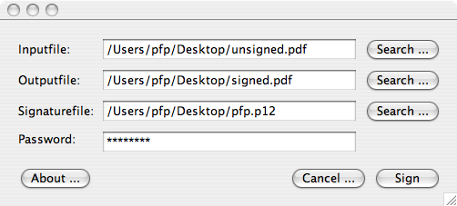
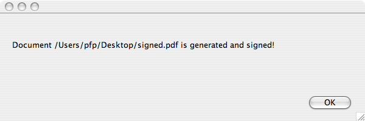

PortableSigner
PortableSigner
Tool to sign Portable Document Files (PDF)
PortableSigner is a signing (with X.509 certificates) program for PDF
files. It's plattform independent and runs (tested) under Windows
(2000, XP, ...), Linux and Mac OS X.
Features
It's possible to sign PDF documents digital with X.509 certificates.
This signed documents are read only. Therefore it's possible to
implement "electronic paper"
Download
http://sourceforge.net/project/showfiles.php?group_id=181271
What is needed?
- This program
- Java 1.5 compatible runtime
- one PKCS#12 file with your personal digital X.509 certificate (from CaCert for example)
- PDF files to sign
Operating modes
PortableSigner can work in 2 modes:
- GUI Desktop
Modus : Graphical frontend to sign single documents.
- Commandline
Modus : Operation from the commandline for batch or operatorless work
GUI Desktop Modus
If you have a Java 1.5 compatible runtime, unpack the ZIP file and
doubleclick or invoke the following commandline from the extracted
directory:
java -jar PortableSigner.jar
Now you see something like this:

The operation on base of this screen is straightforward:
- Select your inputfile (the last used file is preselected).
- Select an outputfile.
- Select your PKCS#12 file (I will support other type of files and keystores later. Look in the ToDo)
- The password of your PKCS#12 file.
- Press the "Sign" Button
- Ready!
Finaly you get the following dialog:

Here's the "About ..." dialog. please include the version info in every request to me!

Commandline Modus
You can use the following commandline parameter:
pfp$ java -jar PortableSigner.jar -h
usage: PortableSigner
-h Help (this page)
-n Without GUI
-o Outputfile (PDF)
-p Signaturepassword
-s Signaturefile (P12)
-t Inputfile (PDF)
pfp$
For the example above the following commandline is requiered:
pfp$ java -jar PortableSigner.jar -n \
-t /Users/pfp/Desktop/unsigned.pdf \
-o /Users/pfp/Desktop/signed.pdf \
-s /Users/pfp/Desktop/pfp.p12 \
-p MySecretPassword
Document
/Users/pfp/Desktop/signed.pdf
is generated and signed!
pfp$
The switch "-n" turns the GUI off. In all other cases the GUI is invoked to support macro mode calling!
Peter
Pfläging <pfp@adv.magwien.gv.at>
This program is made by the EDP department of the Municipality of Vienna (http://www.wien.gv.at/english/edp/).